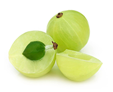

Our product is back in stock and ready to ship. We thank you
for your patience during this period of overwhelming
for Disolvatol.
or
Pain Relief
Stone Breaker & Dissolver
Max Potency
Not All Kidney Stone Supplements Are Created Equal
There’s a huge difference between products that can deliver and those that don’t. Some even put your safety at risk.
If you look at nearly any supplement designed to help you pass or prevent kidney stones, you’ll likely see one commonality: many contain the herb Chanca Piedra. Chanca Piedra can be amazingly powerful for preventing and eliminating kidney stones, but there’s one major problem: many companies don’t use lab grade Chanca Piedra. In other words, if you buy a Chanca Piedra product and aren’t sure of its source, it’s likely that it’s not as potent as it could be — because it isn’t necessarily lab grade.
Worse yet, if you choose to use one of the cheaper products out there, you run the risk of ingesting toxic chemicals that could ultimately do you more harm than good.
We’ve solved both of these issues
Disolvatol is 99.8% purity grade Chanca Piedra and it’s free from toxic chemicals, making it an all-natural, safe, and effective herbal supplement designed to help you get rid of kidney stones — now and in the future.
Without getting too scientific, let’s look at
Why Lab Grade of Chanca Piedra is so Important
Imagine that every day for lunch, you ate a fast food burger, fries, and a shake. While that may sound good, how do you think you and your body would feel? Probably tired and ready for a nap, right? Eventually, this would likely lead to a life of obesity, health issues, and many aches and pains.
But what happens if you were to replace that daily lunch with a nutritious, leafy green salad with grilled chicken, tomatoes, cucumbers, and an oil and vinegar dressing on top? How would you feel then? You’d likely have a ton of energy and feel a lot better!
The reason for the difference is simple: in the first scenario, you’re taking in a lot of things your body doesn’t need, namely fat and extra calories, while being pretty void of nutrition. However, in the second example, you’re giving your body the nutrients it needs to live a life of greater health.
This is why lab grade matters with Chanca Piedra
Not only does higher grade mean that you have access to higher quality herbs — herbs that do what they’re meant to do — but it does so without exposing you to ingredients that could make you feel worse. As a result, your body responds with improved kidney health, naturally.
When you give your body the purest nutrients and herbs, it responds in a more positive manner that means a life of greater kidney health (and less pain!).
Prevent & Get Rid of Bothersome Kidney Stones!
Take two capsules of Disolvatol daily with its lab grade Chanca Piedra and instead of wondering if your stones are going to bother you today, you’ll tell them that they don’t stand a chance.
Breaks up stones
The term Chanca Piedra literally means “stone breaker.” Taking this lab grade herb helps reduce stone size so they leave your bodily more easily.
“Smoother” passing of stones
A study published in Urological Research found that high purity grade Chanca Piedra makes kidney stones “smoother,” which means they’re easier and less painful to pass.
Many doctors will tell you that the best way to get rid of kidney stones is to drink more so you urinate more. Disolvatol helps with increased urination too, acting as a diuretic and flushing your kidneys in the process.
Reduced future stone formation
The aforementioned Journal of Pharmacy and Pharmacology article also reports that Chanca Piedra helps reduce crystal formation. Translation: you may never have to deal with painful stones again when you take this herb daily!
Disolvatol is scientifically proven to provide
Many benefits when it comes to greater kidney health
The National Kidney Foundation reports that kidney stones will afflict one out of every ten people nationwide. Also, more than 500,000 people will seek medical care via our nation’s emergency rooms this year alone for issues related to kidney stones.
That being said, study after study has been conducted on the herb Chanca Piedra, many of which have found that it effectively administers numerous kidney benefits, potentially reducing the number of hospital visits required for this particular condition.
For instance, a study conducted by researchers from the Nephrology Division of a Brazilian university found that Phyllanthus niruri — another name for the Chanca Piedra herb — helps inhibit the growth of the crystals that turn into kidney stones. Thus, by taking it regularly, it can act as a preventative measure for future kidney stone issues.
Furthermore, in the report “Herbal Secrets of the Rainforest”, it’s revealed that Dr. Wolfram Wiemann
of Nuremberg, Germany saw a 94% success rate of stone elimination with two weeks when
high-grade Chanca Piedra was administered to 100 patients with kidney stones.
Higher Quality Chanca Piedra
With herbs like Chanca Piedra, it’s not so much about the amount of the herb, it’s the quality. That’s why Disolvatol uses only 99.8% lab grade Chanca Piedra.
It’s also why we only source the Chanca Piedra used in Disolvatol in the U.S. We also test it in the U.S., so you can be sure you’re getting the highest purity grade Chanca Piedra in every bottle.
Disolvatol’s ironclad guarantee
You’re skeptical. We get it. We would be too.
That’s why if you’re not completely satisfied with the results of Disolvatol, we’ll gladly refund your money. That’s how much we believe in our product and its ability to help with your kidney stones.
What Makes It Work?

99.8% Purity Grade Chanca Piedra
Purity grade matters. The lower the grade, the lower the effectiveness. That’s why Disolvatol is proud to be the only all-natural herbal solution that uses only 99.8% purity grade Chanca Piedra. Why this amount? It’s simple: 99.8% purity grade is shown to be an effective remedy for eliminating kidney stones.
Ginger Root
Ginger root is often used to help ease digestive issues such as gas, diarrhea, and nausea. It’s also taken as a pain reliever for conditions related to arthritis, bronchitis, and even headaches.
Horsetail
Horsetail is often used to strengthen the respiratory system, protect bone health, and even provide greater health to our teeth and hair. It does a little bit of everything.
Pomegranate
Not only is this fruit tasty, but it also provides quite a few health benefits, which include better protection from the sun, elimination of free radicals, reduced inflammation, and enhanced blood circulation.
Dandelion Root
Though many people consider dandelions to be eyesores, their roots actually help with muscle aches, gallstones, and joint pain. They’re also said to help treat viral infections.
Parsley Root
The root of parsley has been credited with a variety of health benefits ranging from helping control diabetes to preventing osteoporosis. It’s also an anti-inflammatory with pain relieving properties.
Milk Thistle
Not really milk at all, this flowering herb can be found in Mediterranean countries and is often used to help treat liver issues like hepatitis, cirrhosis, and jaundice. It also assists in treating individuals with gallbladder disorders.
Licorice Root
Licorice root has been credited with lowering cholesterol, easing menstrual cramps, and providing relief from gastrointestinal issues. It also helps with weight reduction and skin issues.
Rosemary
From a stronger immune system to fewer bacterial infections, rosemary delivers a number of advantages. That includes mental health, as it’s found to improve both mood and memory. We’ll take it!
Cranberry
Cranberry is fantastic for everything urinary tract-related, like relief from kidney stones and urinary tract infections, and provides benefits related to respiratory disorders and heart disease.
Why choose Disolvatol over all
of the other kidney stone preventatives & treatments?
Disolvatol is created by Kidney Stone Labs, the leaders in kidney stone research. We take stone prevention and treatment seriously and use only the highest quality grade of Chanca Piedra possible. Plus, check out our ingredient list and you’ll also see that we use only all-natural, clean ingredients in our products. There’s also the fact that Disolvatol is American-made and third-party tested in an FDA (Food and Drug Administration) facility.
Quality matters
Disolvatol harnesses the powerful ancient properties of laboratory grade Chanca Piedra to support your body's natural ability to pass and prevent stones while minimizing damage to organs such as the kidney, urethra, and bladder.
Here’s what people are saying about our products!*
“My doctor didn’t think it would work but I went from having 6 stones in a CT scan to NO stones in the last one. A few were passed and the rest just melted.”
Sara M., Brooklyn, NY
“I did 2 weeks of Flomax and the stone didn’t pass. Then I took my first Disolvatol in the morning and passed the stone later that same afternoon. Now after 3 months my CT scan shows ZERO stones.”
Michael L., Oxnard, CA
“After years of agony and 8, yes 8 surgeries my nutritionist instructed me to take high quality, organic Chanca Piedra. 19 months later I haven’t had one kidney stone. Not even a hint of pain.”
Dan L., Birmingham, AL
“I’ve had a long history of kidney stones including 3 surgeries. I started taking Disolvatol last May and within 2 weeks I passed several stones. Now I feel wonderful and have had no issue… ZERO. Amazing.”
Jim A., Martinsville, VA
“I had a 2cm stone and I was scheduled for surgery. I figured it wouldn’t hurt to give this a try while I waited. 6 weeks after starting the pills I had an ultrasound and the stone was gone.”
Adam N., Henryetta, OK
The testimonials you see here are from real Disolvatol customers and reflect their real life experiences using the product. We cannot claim that every user of this product will achieve the same exact results
Frequently Asked Questions
What exactly does Disolvatol do?
Disolvatol helps give your body exactly what it needs to cleanse excess build up and toxins. After cleansing the body the substance increases clearance so impurities can be safely passed. Disolvatol is NOT a drug! It is an all-natural dietary supplement which combines the highest concentration and purest form of Chanca Piedra a.k.a “Stone Breaker” into a natural relieving process.
Are there any negative side effects?
There have been no substantive reports of any side effects from users of Disolvatol.
Is Disolvatol natural?
Yes. Disolvatol is a natural herb used for over 1,000 years.
1 Month Supply
One bottle of Disolvatol
$4.00 Shipping & Handling
45 Days Mone
$59.00
3 Months Supply
Three bottles of Disolvatol
Free Shipping & Handling
45 Days Money-Back Guarantee
$139.00
6 Months Supply
Six bottles of Disolvatol
Free Shipping & Handling
45 Days Money-Back Guarantee
$223.00
Monthly Subscription
30 Days Supply of Disolvatol. Try it and if you don’t feel a difference, it’s money back time. There’s no risk.
Refund Policy
Our #1 policy is customer satisfaction
If you are unsatisfied with our product for any reason, return it within 45 days of receiving it and we’ll provide you with a full refund. It’s that easy!